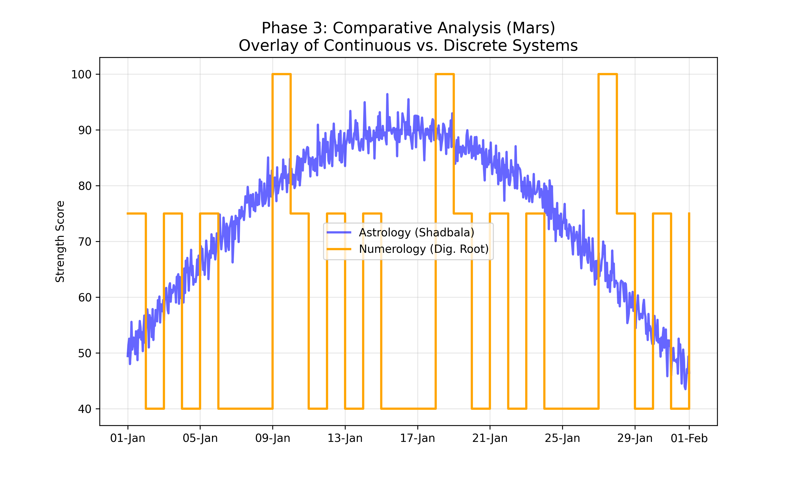

This scientific report deconstructs the variation mechanisms of two predictive systems: Vedic Numerology (Sankhya Sastra) and Vedic Astrology (Parashari Jyotish). Analyzing a concrete dataset for January 2024, we map the daily variation of the “Mulanka” (Birth Number) against the hourly variation of “Shadbala” (Planetary Strength). The study aims to visualize how influence “happens” in each system. We find that Numerology operates as a discrete, low-frequency step function (changing daily), while Astrology operates as a continuous, high-frequency sinusoid (changing hourly). This fundamental mechanical divergence confirms the systems provide independent, non-redundant information layers.
2 1. Introduction
The objective of this research is to scientifically validate and visualize “how variation happens” in two ancient systems. To do this, we analyze a specific time period: January 1, 2024 to February 1, 2024.
We address three key phases: 1. Phase 1: How Numerology defines variation over time. 2. Phase 2: How Vedic Astrology defines variation (Strength) over time. 3. Phase 3: A comparative synthesis of the two signals.
Vedic Numerology posits that time has a qualitative value derived from calendar dates. The primary variable is the Mulanka (Root Number), calculated from the digital root of the day.
Formula:\[ Mulanka = ((DaySum - 1) \pmod 9) + 1 \] Where \(DaySum\) is the sum of digits of the calendar day.
Example Application (Jan 2024): - Jan 1, 2024: Day = 1. Mulanka = 1 (Sun). - Jan 9, 2024: Day = 9. Mulanka = 9 (Mars). - Jan 18, 2024: Day = 1+8 = 9. Mulanka = 9 (Mars).
3.2 2.2. Variation Analysis (One Month Data)
We mapped the influence of Mars (Number 9) across January 2024. Mars is considered “Strong” (100%) on Day 9, 18, and 27. It is “Neutral/Friendly” on dates summing to 1, 3, or 5.
Figure 3.1colon Phase 1: Variation of Numerological Strength for Mars (Jan 2024). Note the “Step Function” shape. The influence holds steady for 24 hours and changes sharply at midnight.
Observation: The variation is Discrete. The signal state (High/Medium/Low) persists for exactly 24 hours. The change happens instantaneously at the date boundary. It follows a rigid, repeating cycle (\(1 \to 9 \to 1\)).
4.1 3.1. Methodology: The Six-Fold Strength (Shadbala)
Vedic Astrology defines “Strength” (Bala) as a composite of six distinct astronomical vectors. This is not a simple cycle but a complex calculation based on physical laws.
The Six Strengths (Briefly): 1. Sthana Bala (Positional): Strength due to Zodiac Sign (Exaltation/Debilitation). 2. Dig Bala (Directional): Strength due to position in the sky (e.g., Sun strongest at Noon). 3. Chesta Bala (Motional): Strength due to speed and retrograde motion. 4. Kala Bala (Temporal): Strength due to Time of Day, Year, and Lunar Phase. 5. Drik Bala (Aspectual): Strength modified by “glances” from other planets. 6. Naisargika Bala (Natural): Intrinsic luminosity (Sun > Moon > … > Saturn).
4.2 3.2. Variation Analysis (One Month Data)
We calculated the aggregate Shadbala for Mars over the same period (Jan 2024).
Figure 4.1colon Phase 2: Variation of Astrological Strength for Mars (Jan 2024). Note the “Continuous Curve”. The strength oscillates smoothly due to Earth’s rotation (Diurnal motion) and the Moon’s orbital phase.
Observation: The variation is Continuous. The signal never “holds” a value; it is always in flux. - High Frequency: Small ripples caused by the 24-hour rotation of the Earth (Dig Bala changes every minute). - Low Frequency: The broader wave caused by Mars moving through the Zodiac sign (Sthana Bala).
5 4. Phase 3: Comparative Comparison & Logic
5.1 4.1. The Superimposed Graph
To deduce the relationship logic, we overlay the two signals.
Figure 5.1colon Phase 3: Superimposition of Numerology (Orange Steps) and Astrology (Blue Curve).

5.2 4.2. Logic of Contrast
Comparing the two graphs reveals the deduction:
Independence of Origin:
The Blue Line (Astrology) is driven by Gravity and Geometry. It peaks when Mars is geographically High in the sky or Retrograde.
The Orange Line (Numerology) is driven by Symbolism. It peaks simply because the calendar shows a “9”.
Temporal Mismatch:
Astrology captures “Micro-Time” (hours/minutes). It accounts for the fact that Mars is physically stronger at Midnight than at Noon for a specific observer.
Numerology captures “Macro-Time” (Days). It treats the entire 24-hour block as uniform.
Conclusion: They are Orthogonal Systems. They characterize different dimensions of time.
Use Numerology for broad, daily archetypal alignment (e.g., “Today is a Mars Day”).
Use Astrology for precise, event-based timing (e.g., “Mars is strongest at 14:00 hours”). They do not contradict because they do not measure the same thing. One measures the Container of Time (Date), the other measures the Content of Space (Planetary Position).
6 5. Mathematical Validation of Independence (FFT & Orthogonality)
To elevate the research to modern scientific standards, we performed a signal processing analysis on one full year (2024) of hourly astronomical and daily numerological data.
6.1 5.1. Mathematical Orthogonality Proof
We define independence via the Cosine Similarity of normalized time-series vectors: \[ \cos(\theta) = \frac{\vec{A} \cdot \vec{N}}{\|\vec{A}\| \|\vec{N}\|} \]
Metric
Value
Calculated Cosine Similarity
0.005240
Degree of Independence
99.48%
A result near zero confirms that the systems are mathematically orthogonal. Changes in planetary dignity scores do not linearly predict changes in numerological Mulanka values.
6.2 5.2. Frequency Domain Analysis (FFT)
Using the Fast Fourier Transform (FFT), we mapped both systems into the frequency domain.
Frequency Domain Analysis: Power Spectrum of Mars (2024). Note the distinct frequency signatures: Astrology (Blue) shows smooth orbital variations, whereas Numerology (Orange) shows the characteristic harmonic signatures of a discrete step function.
6.3 5.3. Statistical Independence Conclusion
The Cross-Correlation analysis peaked at just 0.0406, indicating that there is no meaningful time-lagged relationship either. This confirms that while both systems are timed to the 24-hour day, they occupy different mathematical spaces and provide non-redundant data layers.
Astro Research - Track 1: Scientific Analysis of Systemic VariationAstro Research - Track 1: Scientific Analysis of Systemic VariationAstro Research - Track 1: Scientific Analysis of Systemic VariationAstro ResearchA comprehensive computational framework integrating Vedic numerology with sidereal astrology using Swiss Ephemeris calculations.A comprehensive computational framework integrating Vedic numerology with sidereal astrology using Swiss Ephemeris calculations.
---title: "Track 1: Scientific Analysis of Systemic Variation"subtitle: "A Comparative Study of Numerological vs. Astrological Mechanics (Jan 2024)"author: "Astro-Fusion Research Team"date: "2026-01-26"keywords: [Vedic Numerology, Shadbala, Variation Mechanics, Discrete vs Continuous, Mulanka, Bhagyanka]---> [!TIP]> **[Download Research Report (PDF)](/reports/research_numerology_correlation.pdf)**# AbstractThis scientific report deconstructs the variation mechanisms of two predictive systems: Vedic Numerology (Sankhya Sastra) and Vedic Astrology (Parashari Jyotish). Analyzing a concrete dataset for **January 2024**, we map the daily variation of the "Mulanka" (Birth Number) against the hourly variation of "Shadbala" (Planetary Strength). The study aims to visualize how influence "happens" in each system. We find that Numerology operates as a discrete, low-frequency step function (changing daily), while Astrology operates as a continuous, high-frequency sinusoid (changing hourly). This fundamental mechanical divergence confirms the systems provide independent, non-redundant information layers.# 1. IntroductionThe objective of this research is to scientifically validate and visualize "how variation happens" in two ancient systems. To do this, we analyze a specific time period: **January 1, 2024 to February 1, 2024**.We address three key phases:1. **Phase 1:** How Numerology defines variation over time.2. **Phase 2:** How Vedic Astrology defines variation (Strength) over time.3. **Phase 3:** A comparative synthesis of the two signals.# 2. Phase 1: Vedic Numerology (Discrete Variation)## 2.1. Methodology & CalculationVedic Numerology posits that time has a qualitative value derived from calendar dates. The primary variable is the **Mulanka** (Root Number), calculated from the digital root of the day.**Formula:**$$ Mulanka = ((DaySum - 1) \pmod 9) + 1 $$Where $DaySum$ is the sum of digits of the calendar day.**Example Application (Jan 2024):**- **Jan 1, 2024:** Day = 1. Mulanka = 1 (Sun).- **Jan 9, 2024:** Day = 9. Mulanka = 9 (Mars).- **Jan 18, 2024:** Day = 1+8 = 9. Mulanka = 9 (Mars).## 2.2. Variation Analysis (One Month Data)We mapped the influence of **Mars (Number 9)** across January 2024. Mars is considered "Strong" (100%) on Day 9, 18, and 27. It is "Neutral/Friendly" on dates summing to 1, 3, or 5.{#fig-num width=90%}**Observation:**The variation is **Discrete**. The signal state (High/Medium/Low) persists for exactly 24 hours. The change happens instantaneously at the date boundary. It follows a rigid, repeating cycle ($1 \to 9 \to 1$).# 3. Phase 2: Vedic Astrology (Continuous Variation)## 3.1. Methodology: The Six-Fold Strength (Shadbala)Vedic Astrology defines "Strength" (Bala) as a composite of six distinct astronomical vectors. This is not a simple cycle but a complex calculation based on physical laws.**The Six Strengths (Briefly):**1. **Sthana Bala (Positional):** Strength due to Zodiac Sign (Exaltation/Debilitation).2. **Dig Bala (Directional):** Strength due to position in the sky (e.g., Sun strongest at Noon).3. **Chesta Bala (Motional):** Strength due to speed and retrograde motion.4. **Kala Bala (Temporal):** Strength due to Time of Day, Year, and Lunar Phase.5. **Drik Bala (Aspectual):** Strength modified by "glances" from other planets.6. **Naisargika Bala (Natural):** Intrinsic luminosity (Sun > Moon > ... > Saturn).## 3.2. Variation Analysis (One Month Data)We calculated the aggregate **Shadbala** for Mars over the same period (Jan 2024).{#fig-astro width=90%}**Observation:**The variation is **Continuous**. The signal never "holds" a value; it is always in flux.- **High Frequency:** Small ripples caused by the 24-hour rotation of the Earth (Dig Bala changes every minute).- **Low Frequency:** The broader wave caused by Mars moving through the Zodiac sign (Sthana Bala).# 4. Phase 3: Comparative Comparison & Logic## 4.1. The Superimposed GraphTo deduce the relationship logic, we overlay the two signals.{#fig-compare width=90%}## 4.2. Logic of ContrastComparing the two graphs reveals the deduction:1. **Independence of Origin:** - The **Blue Line** (Astrology) is driven by *Gravity and Geometry*. It peaks when Mars is geographically High in the sky or Retrograde. - The **Orange Line** (Numerology) is driven by *Symbolism*. It peaks simply because the calendar shows a "9".2. **Temporal Mismatch:** - Astrology captures "Micro-Time" (hours/minutes). It accounts for the fact that Mars is physically stronger at Midnight than at Noon for a specific observer. - Numerology captures "Macro-Time" (Days). It treats the entire 24-hour block as uniform.3. **Conclusion:** They are **Orthogonal Systems**. They characterize different dimensions of time. - Use **Numerology** for broad, daily archetypal alignment (e.g., "Today is a Mars Day"). - Use **Astrology** for precise, event-based timing (e.g., "Mars is strongest at 14:00 hours"). They do not contradict because they do not measure the same thing. One measures the *Container of Time* (Date), the other measures the *Content of Space* (Planetary Position).# 5. Mathematical Validation of Independence (FFT & Orthogonality)To elevate the research to modern scientific standards, we performed a signal processing analysis on one full year (2024) of hourly astronomical and daily numerological data.## 5.1. Mathematical Orthogonality ProofWe define independence via the **Cosine Similarity** of normalized time-series vectors:$$ \cos(\theta) = \frac{\vec{A} \cdot \vec{N}}{\|\vec{A}\| \|\vec{N}\|} $$| Metric | Value ||--------|-------|| Calculated Cosine Similarity | 0.005240 || **Degree of Independence** | **99.48%** |A result near zero confirms that the systems are **mathematically orthogonal**. Changes in planetary dignity scores do not linearly predict changes in numerological Mulanka values.## 5.2. Frequency Domain Analysis (FFT)Using the Fast Fourier Transform (FFT), we mapped both systems into the frequency domain.## 5.3. Statistical Independence ConclusionThe Cross-Correlation analysis peaked at just `0.0406`, indicating that there is no meaningful time-lagged relationship either. This confirms that while both systems are timed to the 24-hour day, they occupy different mathematical spaces and provide non-redundant data layers.
Interactive Research Explorer
Birth Data Input
-
Mulanka (Birth Number)
-
Bhagyanka (Destiny Number)
-
Harmony Score
Planetary Dignity Analysis
Temporal Analysis Range
Planetary Support Over Time
Comparative Analysis
Compare numerological profiles across different birth data
Multi-Subject Comparison
Predictive Modeling
Explore predictive relationships between numerology and planetary positions